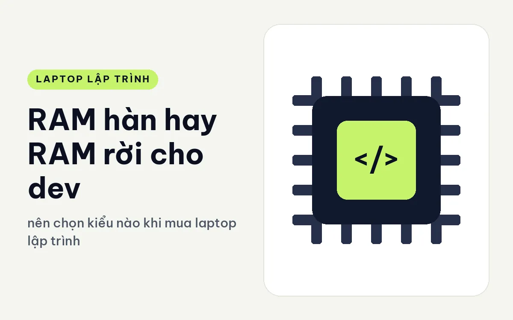
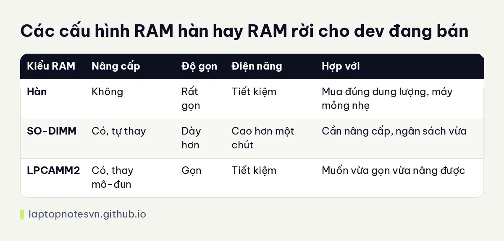

RAM hàn hay RAM rời cho dev - nên chọn kiểu nào khi mua laptop lập trình

Khi xem thông số laptop, bạn sẽ gặp ba kiểu RAM: hàn cố định lên bo mạch, cắm vào khe SO-DIMM truyền thống, và kiểu LPCAMM2 mới hơn. Cả ba đều là RAM, nhưng khác nhau về khả năng nâng cấp, độ gọn của máy và tốc độ. Với dev, lựa chọn này quyết định bạn có thể tăng RAM sau hai ba năm khi dự án phình ra hay phải thay cả máy.
Bài này mô tả từng kiểu, đưa ra cách chọn theo nhu cầu, rồi chỉ ra máy đang bán thuộc kiểu nào. Mọi nhận định về từng máy chỉ lấy từ thông số trang sản phẩm.
Ba kiểu RAM trên laptop
RAM hàn là chip bộ nhớ gắn trực tiếp lên bo mạch. Ưu điểm là máy mỏng, tiết kiệm điện và thường đạt tốc độ cao nhờ đường dẫn ngắn. Nhược điểm là không thay, không nâng được. Dung lượng bạn mua hôm nay là dung lượng bạn có suốt đời máy.
SO-DIMM là thanh RAM cắm vào khe, kiểu quen thuộc bao năm. Bạn có thể tự thay, thêm thanh, nâng lên dung lượng lớn khi giá hợp lý. Đổi lại, khe cắm chiếm chỗ nên máy dày hơn, và tốc độ thường thấp hơn RAM hàn đời mới.
LPCAMM2 là kiểu mô-đun mới, kết hợp ưu điểm của hai kiểu trên. Mô-đun tháo lắp được nhưng có tốc độ cao và tiết kiệm điện gần bằng RAM hàn. Máy dùng kiểu này vẫn gọn, và bạn vẫn nâng cấp được. Nhược điểm là mô-đun còn mới nên chọn lựa ít và giá thường cao hơn thanh SO-DIMM.
Nên chọn kiểu nào theo nhu cầu
Nếu bạn chủ yếu code web, dùng Docker vừa phải và mua đúng cấu hình 32GB, RAM hàn là đủ. Máy mỏng nhẹ và pin tốt, bạn không cần nâng cấp trong vài năm. Điều quan trọng là mua đúng dung lượng ngay từ đầu, đừng tiết kiệm ở bước này.
Nếu nhu cầu chưa rõ hoặc dự án có thể phình, kiểu có thể nâng cấp là lựa chọn an toàn. Bạn mua mức vừa hôm nay và nâng khi cần. Giá RAM thay đổi theo thời điểm, nên khả năng chọn lúc nào nâng cũng có lợi.
Nếu bạn dùng máy ảo nặng, nhiều container hoặc xử lý dữ liệu, hãy nghiêng về kiểu có thể nâng và có trần dung lượng cao. Cách xác định nhu cầu RAM cụ thể có trong bài lập trình viên cần bao nhiêu RAM.
Lưu ý nhỏ: một số máy nâng được RAM nhưng chỉ có một khe, nên muốn tăng dung lượng phải thay thanh cũ, không thêm được thanh mới. Hãy đọc kỹ số khe và tối đa dung lượng.
Khi dung lượng hết, cách xử lý với máy hàn là giảm tải: đóng bớt ứng dụng, giới hạn bộ nhớ cho Docker, dùng máy chủ ngoài cho phần nặng. Cách này chạy được nhưng bạn đang gánh chi phí về công sức, nên đáng cân nhắc mua dư dung lượng ngay từ đầu.
Bảng đối chiếu nhanh

| Kiểu RAM | Nâng cấp | Độ gọn | Điện năng | Hợp với |
|---|---|---|---|---|
| Hàn | Không | Rất gọn | Tiết kiệm | Mua đúng dung lượng, máy mỏng nhẹ |
| SO-DIMM | Có, tự thay | Dày hơn | Cao hơn một chút | Cần nâng cấp, ngân sách vừa |
| LPCAMM2 | Có, thay mô-đun | Gọn | Tiết kiệm | Muốn vừa gọn vừa nâng được |
Tốc độ RAM có đáng bận tâm không
Các thông số như 5600 hay 8533 cho biết tốc độ truyền của RAM. Số cao hơn có lợi ở những việc đụng nhiều bộ nhớ, như xử lý dữ liệu hoặc chạy đồ họa tích hợp, vì chip đồ họa tích hợp dùng chung RAM với CPU. Với việc code thuần, chênh lệch giữa hai mức gần nhau rất khó cảm nhận.
Dung lượng gần như luôn quan trọng hơn tốc độ. Một máy 32GB tốc độ vừa phải chạy trơn tru hơn máy 16GB tốc độ cao khi bạn mở IDE, trình duyệt nhiều thẻ và vài container cùng lúc. Khi RAM hết, hệ thống dồn sang ổ đĩa và máy chậm hẳn.
Cũng nên để ý chuyện kênh đôi. Hai thanh RAM chạy kênh đôi thường cho băng thông tốt hơn một thanh dung lượng bằng tổng, điều này thấy rõ ở đồ họa tích hợp. Máy chỉ có một khe sẽ chạy kênh đơn, và đó là một lý do cần đọc kỹ thông số.
Máy nào đang đáp ứng điều này
Kiểu hàn: DELL XPS 13 DX13260 (2026) dùng LPDDR5X 16GB hoặc 32GB hàn, không nâng cấp. Máy nặng khoảng 0,9 kg, dày 12,7 mm, hợp người đã biết mình cần bao nhiêu RAM. Nếu không chắc, bản 32GB an toàn hơn.
Kiểu LPCAMM2: Lenovo ThinkPad T14 Gen 7 (2026) đi kèm 32GB LPDDR5x 7467 dạng LPCAMM2, nâng tối đa tới 64GB. Máy nặng từ 1,29 kg. Đây là lựa chọn cho người muốn vừa gọn vừa có đường nâng cấp.
Kiểu khe SO-DIMM: Lenovo ThinkPad E14 Gen 8 (2026) bản AMD Ryzen AI 5 330 có hai khe DDR5-5600 tối đa 64GB, còn bản Intel Core 7 350 chỉ có một khe, tối đa 32GB kênh đơn. Hai bản cùng tên máy nhưng khả năng RAM khác nhau, hãy xem kỹ bản mình mua.
Chuyện nâng cấp sau khi mua còn gồm cả SSD và mở nắp máy, mời bạn đọc nâng cấp RAM và SSD sau khi mua laptop dev.
Đăng ngày 09/11/2026